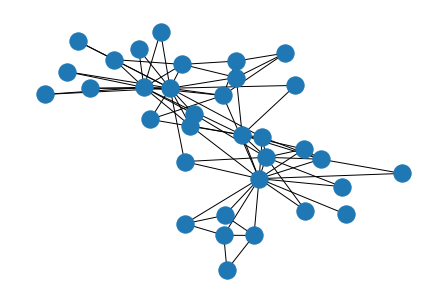
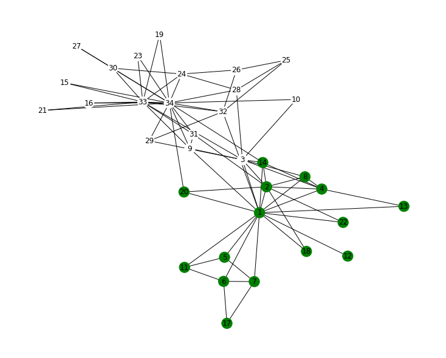

18. Community detection#
Write a Python function implementing the Girvan-Newman algorithm to find the community structure of a graph (see: https://arxiv.org/abs/cond-mat/0112110)
Test your function on the famous Zachary Karate Club network.
Display the network with color-coded nodes according to the communities found by the algorithm
%matplotlib inline
import matplotlib.pyplot as plt
import networkx as nx
import networkx.algorithms.centrality as nc
from operator import itemgetter
18.1. The Karate Club is so important that NetworkX has a function to import it#
G = nx.karate_club_graph()
eNum = G.number_of_edges()
nnodes = len(G)
eNum, nnodes
(78, 34)
G.nodes()
NodeView((0, 1, 2, 3, 4, 5, 6, 7, 8, 9, 10, 11, 12, 13, 14, 15, 16, 17, 18, 19, 20, 21, 22, 23, 24, 25, 26, 27, 28, 29, 30, 31, 32, 33))
Note that the nodes are labelled from 0 to 33 while the most common labeling (as shown in Girvan 2002) starts from 1.
pos = nx.spring_layout(G)
nx.draw(G, pos)

nx.number_connected_components(G)
1
nc.edge_betweenness(G)
{(0, 1): 0.025252525252525245,
(0, 2): 0.0777876807288572,
(0, 3): 0.02049910873440285,
(0, 4): 0.0522875816993464,
(0, 5): 0.07813428401663694,
(0, 6): 0.07813428401663695,
(0, 7): 0.0228206434088787,
(0, 8): 0.07423959482783014,
(0, 10): 0.0522875816993464,
(0, 11): 0.058823529411764705,
(0, 12): 0.04652406417112298,
(0, 13): 0.04237189825425121,
(0, 17): 0.04012392835922248,
(0, 19): 0.045936960642843,
(0, 21): 0.040123928359222474,
(0, 31): 0.1272599949070537,
(1, 2): 0.023232323232323233,
(1, 3): 0.0077243018419489,
(1, 7): 0.007422969187675069,
(1, 13): 0.01240556828792123,
(1, 17): 0.01869960105254222,
(1, 19): 0.014633732280791102,
(1, 21): 0.01869960105254222,
(1, 30): 0.032280791104320514,
(2, 3): 0.022430184194890075,
(2, 7): 0.025214328155504617,
(2, 8): 0.009175791528732704,
(2, 9): 0.030803836686189627,
(2, 13): 0.007630931160342923,
(2, 27): 0.04119203236850296,
(2, 28): 0.02278244631185807,
(2, 32): 0.06898678663384543,
(3, 7): 0.003365588659706307,
(3, 12): 0.012299465240641705,
(3, 13): 0.01492233256939139,
(4, 6): 0.0047534165181224,
(4, 10): 0.0029708853238265,
(5, 6): 0.0029708853238265003,
(5, 10): 0.0047534165181224,
(5, 16): 0.029411764705882353,
(6, 16): 0.029411764705882353,
(8, 30): 0.00980392156862745,
(8, 32): 0.0304416716181422,
(8, 33): 0.04043657867187279,
(9, 33): 0.029615482556659026,
(13, 33): 0.06782389723566191,
(14, 32): 0.024083977025153497,
(14, 33): 0.03473955238661121,
(15, 32): 0.024083977025153497,
(15, 33): 0.03473955238661121,
(18, 32): 0.024083977025153497,
(18, 33): 0.03473955238661121,
(19, 33): 0.05938233879410351,
(20, 32): 0.024083977025153497,
(20, 33): 0.03473955238661121,
(22, 32): 0.024083977025153493,
(22, 33): 0.03473955238661121,
(23, 25): 0.019776193305605066,
(23, 27): 0.010536739948504653,
(23, 29): 0.00665478312537136,
(23, 32): 0.022341057635175278,
(23, 33): 0.03266983561101209,
(24, 25): 0.0042186571598336305,
(24, 27): 0.018657159833630418,
(24, 31): 0.040106951871657755,
(25, 31): 0.04205783323430383,
(26, 29): 0.004532722179781003,
(26, 33): 0.0542908072319837,
(27, 33): 0.030477039300568713,
(28, 31): 0.0148544266191325,
(28, 33): 0.024564977506153975,
(29, 32): 0.023328523328523323,
(29, 33): 0.029807882749059215,
(30, 32): 0.01705288175876411,
(30, 33): 0.02681436210847975,
(31, 32): 0.04143394731630026,
(31, 33): 0.05339388280564752,
(32, 33): 0.008225108225108224}
18.2. First clustering function#
def updateGraph1(G):
ebw = nc.edge_betweenness(G)
maxs = 0
for k, v in ebw.items():
if maxs < v:
medge, maxs = k, v
G.remove_edge(medge[0], medge[1])
18.3. Second clustering function#
def updateGraph2(G):
ebw = nc.edge_betweenness(G)
edge_list = sorted(ebw.items(), key=itemgetter(1))
medge = edge_list[-1][0]
G.remove_edge(medge[0], medge[1])
18.4. Find the partition into two communities#
while nx.is_connected(G):
# we remove links until the graph is connected
updateGraph1(G)
communities = [i for i in nx.connected_components(G)]
communities
[{0, 1, 3, 4, 5, 6, 7, 10, 11, 12, 13, 16, 17, 19, 21},
{2, 8, 9, 14, 15, 18, 20, 22, 23, 24, 25, 26, 27, 28, 29, 30, 31, 32, 33}]
color_community = []
for i in range(0, len(G)):
if i in communities[0]:
color_community.append(0)
else:
color_community.append(1)
To compare the results to Figure 4 of the paper by Girvan and Newman nodes’ labels must be increased by 1.
H = nx.karate_club_graph()
labels_GN = {}
for i in H:
labels_GN[i] = i + 1
plt.figure(figsize=(10, 8))
nx.draw(
H,
pos,
labels=labels_GN,
node_color=color_community,
cmap=plt.cm.ocean,
with_labels=True,
)
